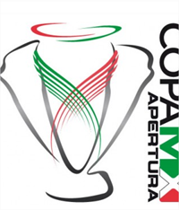
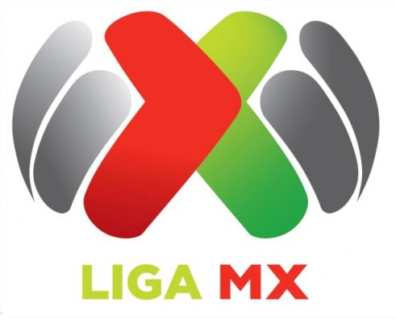
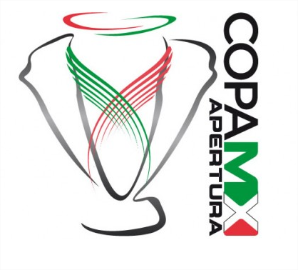

No sé porque no los había analizado antes, pero hasta el día de ayer me di cuenta de lo horrendo que están los nuevos logotipos de la liga MX de México, nuevo nombre que se le dio a la liga mexicana, la liga de ascenso y al campeonato. Anteriormente no había logotipos para estos eventos de futbol, y considero que debió quedarse eso así porque los logotipos sinceramente pecan de feos, al grado que me atrevo a decir que quien los hizo fue algún hijo de un directivo “que le sabe al Photoshop”, quizá para que fuera más barato o para que el hijo tuviera algo en su currículum. No soy diseñador gráfico pero he aprendido muchas cosas de gente muy profesional, y por eso les traigo algunos puntos que hacen estos logos una verdadera porquería y una vergüenza para el diseño en México.


Y bueno, después de darse el susto de sus vidas veamos porqué es efectivamente malo el diseño.
Inconsistencia en la tipografía: de por si las fuentes que usaron no son las más adecuadas, a excepción quizá de la de ascenso, pero en general son malas y se ven peor cuando las combinas en un mismo logo, como el de la Copa MX.
El uso de degradados: el primer logo es quizá lo más horrendo que he visto de logotipos “profesionales”, y es que el degradado falla por dos razones: los colores que se usaron son el clásico negro y blanco sin ningún tipo de ajuste; y la dirección del degradado en las alas ni siquiera es igual, es más brillante de un lado que del otro, y no creo que sea a propósito. El segundo logo es también una perdición por el degradado, sólo que en vez de usar el negro y blanco se fueron por la tercia de negro-blanco-negro.
Los colores de México: yo mismo reconozco que no es tan fácil tratar de hacer un diseño con los colores de la bandera mexicana, uno porque puede parecer que es el nuevo logo del PRI, y el otro porque los colores pareciera que sólo funcionan bien en la bandera, no en otra aplicación. Estos logos son el ejemplo perfecto, los colores no se ven bien uno al otro, ni con colores sólidos ni con degradados, y si le agregamos un color negro el resultado es muy seco.
Las formas del logo: generalmente los logotipos se hacen de tal forma que funcionen con fondos diferentes, o al menos los colores de fondo que tiene permitida la empresa. Estos logotipos no aguantan un color de fondo además del blanco y quizá el negro si usamos negativos por la misma selección de colores, y eso ya es muy deprimente para un logo. De las formas es bien curioso como el primero recuerda a la X de Xbox y si lo partes a la mitad parece el logo de Nextel. El segundo no tiene forma en realidad, porque es una copa, pero parece tener una aureola y unas tipo alas bien guardadas. Y el tercero asimila a un balón y alas, y de cierta forma es más decente pero no por eso bueno, está muy regular.
El mensaje no tan claro: estos logotipos deberían mostrar el renacimiento de la liga mexicana de futbol, la nueva actualización y lavado de cara que están promocionando, pero la verdad es que no refleja nada de eso. El diseño es muy pobre, hay mucho espacio entre las formas. El tercer logo es demasiado pequeño como para representar algo grande. No es gracioso, divertido, ni serio, es más un chiste o broma.
Si no entienden bien a qué me refiero con todo lo anterior les dejo un ejemplo muy rápido. Este es el logo de la Euro 2012, un logo divertido, colorido y que si lo comparamos con el de la Liga MX podemos ver la imagen que le damos al mundo del diseño que hay en México.

Entonces, esto logramos cuando se deja este tipo de trabajos a gente que no sabe a lo que se mete, logrando que la imagen de los buenos diseñadores mexicanos quede opacada por el trabajo tan pobre de estas personas que no saben ni siquiera cambiar el color de un degradado. Pero bueno, ya me desquite yo, me gustaría saber qué piensan de estos logos y si es verdad que tengo razón, o sólo es pura imaginación mía.